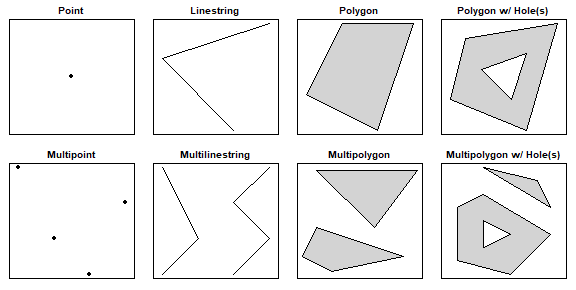
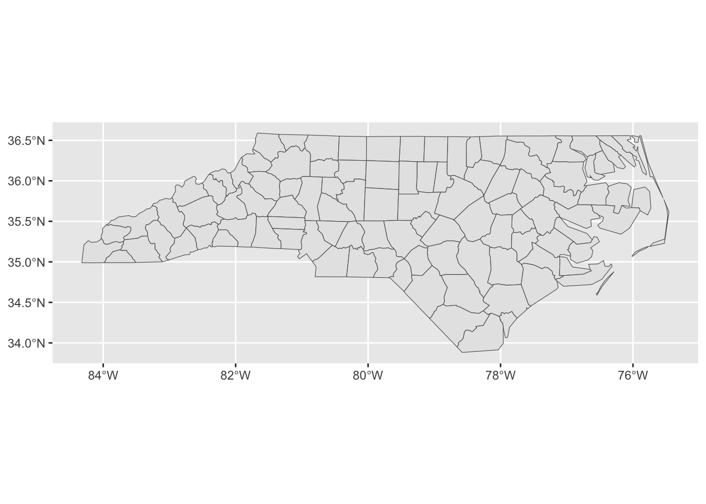
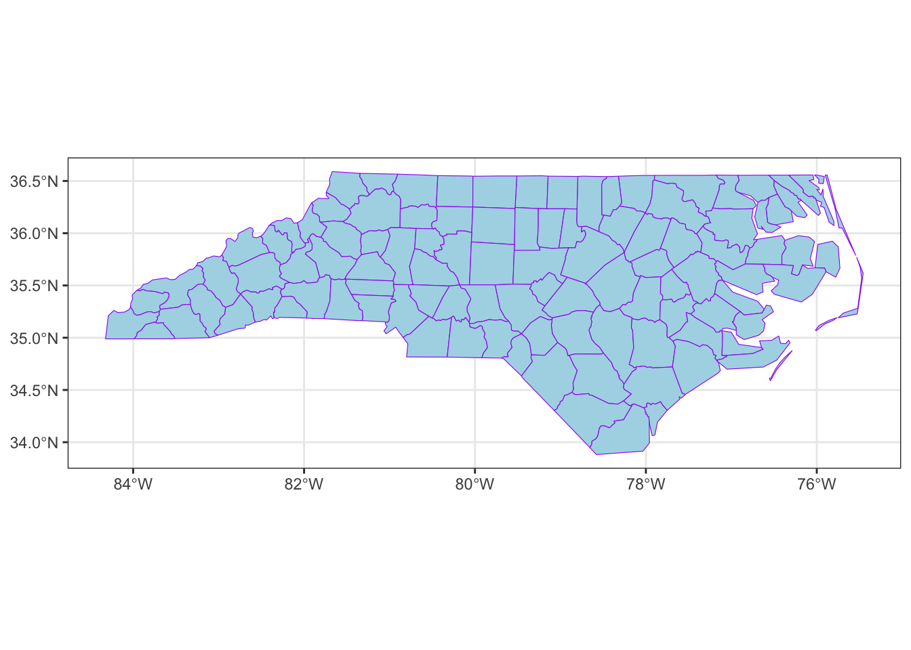
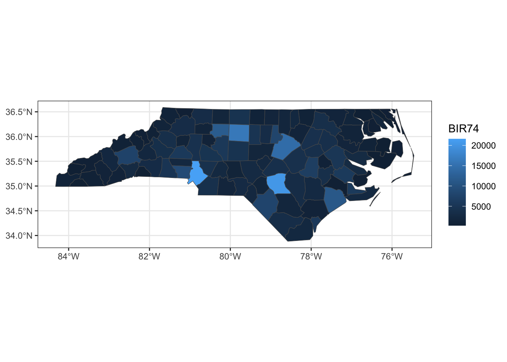
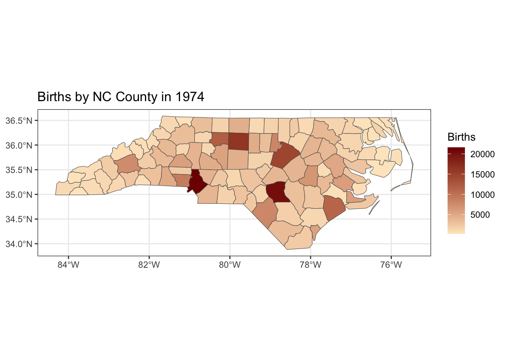

install.packages("sf")Lab 2: Visualizing Spatial Data and Coding Style
Due Monday, July 13, at 11:59pm
Set up
There is a template for today’s lab assignment on the Canvas page.
This week’s lab
This week’s lab does not pertain specifically to lecture material, and is in two parts. First, we will look into some cool and interesting things you can do with visualizations in R, which may prove useful to you in the future! Then, we are going to learn a bit about good coding practices.
Spatial Data
Computational setup
You’ll need an additional package today, useful for mapping spatial data. Run the following in your Console to install the package:
Then, create an R chunk in your Quarto document to load today’s packages for the lab. Remember to suppress warnings and messages using the Quarto options (i.e. #| warning: false).
library(tidyverse)
library(sf)
Tip
Render your document to ensure the warnings/messages are suppressed.
We will use the sf package, which stands for simple features. Simple features are a commonly-used spatial data standard that specify storage and access for map geometrics used by geographic information systems (GIS). The sf package in R represents simple features in a tidy way, in which each row stands for a simple feature, and each column corresponds to a variable.
Simple features use 2D geometries which “connect the dots” between defined points in space:

Read in data
To read simple features from a file or database, use the st_read() function. There are already some objects included in the sf package. We will load a file that corresponds to the counties in North Carolina:
# read in the data
nc <- st_read(system.file("shape/nc.shp", package = "sf"),
quiet = TRUE)
ncSimple feature collection with 100 features and 14 fields
Geometry type: MULTIPOLYGON
Dimension: XY
Bounding box: xmin: -84.32385 ymin: 33.88199 xmax: -75.45698 ymax: 36.58965
Geodetic CRS: NAD27
First 10 features:
AREA PERIMETER CNTY_ CNTY_ID NAME FIPS FIPSNO CRESS_ID BIR74 SID74
1 0.114 1.442 1825 1825 Ashe 37009 37009 5 1091 1
2 0.061 1.231 1827 1827 Alleghany 37005 37005 3 487 0
3 0.143 1.630 1828 1828 Surry 37171 37171 86 3188 5
4 0.070 2.968 1831 1831 Currituck 37053 37053 27 508 1
5 0.153 2.206 1832 1832 Northampton 37131 37131 66 1421 9
6 0.097 1.670 1833 1833 Hertford 37091 37091 46 1452 7
7 0.062 1.547 1834 1834 Camden 37029 37029 15 286 0
8 0.091 1.284 1835 1835 Gates 37073 37073 37 420 0
9 0.118 1.421 1836 1836 Warren 37185 37185 93 968 4
10 0.124 1.428 1837 1837 Stokes 37169 37169 85 1612 1
NWBIR74 BIR79 SID79 NWBIR79 geometry
1 10 1364 0 19 MULTIPOLYGON (((-81.47276 3...
2 10 542 3 12 MULTIPOLYGON (((-81.23989 3...
3 208 3616 6 260 MULTIPOLYGON (((-80.45634 3...
4 123 830 2 145 MULTIPOLYGON (((-76.00897 3...
5 1066 1606 3 1197 MULTIPOLYGON (((-77.21767 3...
6 954 1838 5 1237 MULTIPOLYGON (((-76.74506 3...
7 115 350 2 139 MULTIPOLYGON (((-76.00897 3...
8 254 594 2 371 MULTIPOLYGON (((-76.56251 3...
9 748 1190 2 844 MULTIPOLYGON (((-78.30876 3...
10 160 2038 5 176 MULTIPOLYGON (((-80.02567 3...When calling the nc object, you should see some metadata associated with these data:
geometrytype: this specifies what geometry is used to plot the simple feature (here, a MULTIPOLYGON)dimension: this specifies the spatial dimensions used in plotting (here, the X and Y plane)bbox: a bounding box: the bounds corresponding to each dimension (here, the latitudes and longitudes on the X-Y plane)epsg(SRID): a unique spatial reference identifier associated with a specific coordinate system; more info here (don’t worry about it)proj4string: another way of defining a coordinate system (don’t worry about it)
Other than these metadata, we have a tidy dataset as we’re used to, except the last column is a geometry.
SIDS
The dataset from today examines Sudden Infant Death Syndrome (SIDS) in each county in North Carolina. SIDS is an unexplained death of an apparently healthy infant, often occurring during sleep that was a big cause for concern in the 1970s and 1980s (before people figured out a better way to lay infants down in the crib). We will create a basic visualization that maps the number of SIDS cases to each county. A few of the variables in the dataset are as follows:
NAME: The county nameFIPS/FIPSNO: The FIPS code of the county (a five digit Federal Information Processing Standards code that uniquely identifies US counties)BIR74: The number of births in 1974SID74: The number of SIDS cases in 1974NWBIR74: The number of non-white births in 1974BIR79,SID79,NWBIR79: similarly for 1979
Creating plots
Now let’s create a basic plot using the nc object! sf objects work well with the tidyverse. For instance, try the following code, noting that we did not specify any aesthetic mapping:
ggplot(data = nc) +
geom_sf()
We can also add some global plot options:
ggplot(data = nc) +
geom_sf(color = "purple", fill = "lightblue") +
theme_bw()
Remember that in our dataset, we had some data that corresponded to each county. How might we incorporate them into our plot? We need to set an aesthetic mapping. Importantly: for sf geometries, the aesthetic mapping is done in the geom_sf() layer.
Let’s create a choropleth map that displays the number of births in 1974 for each county. Note how the following code is different from the earlier code:
ggplot(data = nc) +
geom_sf(aes(fill = BIR74)) +
theme_bw()
We can also manually set the color scheme by adding a scale_fill_gradient() layer. Here, we’ll specify hex values for our color extremes. We will also add an informative title and legend title:
ggplot(nc) +
geom_sf(aes(fill = BIR74)) +
scale_fill_gradient(low = "#fee8c8", high ="#7f0000") +
theme_bw() +
labs(title = "Births by NC County in 1974",
fill = "Births")
Exercise 1
Read in the
ncdataset using the code above. (Do not print out thencobject. Simply read it in.)Recreate the NC chloropleth map of births from 1974. Choose a different
lowandhighcolor than the example above, but ensure the colors make sense. (i.e. you should have a “lighter” color for thelowand a darker tone of the same color for thehigh.) You may browse this list of colors for various choices. Update the title and legend title.
Tip
Note that in the example above, the colors were listed as HEX codes (# followed by 6 digits). In R, you may refer to colors either by their HEX code or by their recognized name in R. The provided list of colors gives both HEX codes and character names. Ensure that whatever you choose, you enclose your color with quotation marks.
dplyr() with simple features
As said previously, simple features work well with the tidyverse. For instance, we can use dplyr() functions to manipulate data.
Let’s filter for observations with over 10,000 births in 1974, and select only the county name and number of birth variables:
nc |>
filter(BIR74 > 10000) |>
select(NAME, BIR74)Simple feature collection with 6 features and 2 fields
Geometry type: MULTIPOLYGON
Dimension: XY
Bounding box: xmin: -81.06555 ymin: 34.45701 xmax: -77.12939 ymax: 36.25709
Geodetic CRS: NAD27
NAME BIR74 geometry
1 Forsyth 11858 MULTIPOLYGON (((-80.0381 36...
2 Guilford 16184 MULTIPOLYGON (((-79.53782 3...
3 Wake 14484 MULTIPOLYGON (((-78.92107 3...
4 Mecklenburg 21588 MULTIPOLYGON (((-81.0493 35...
5 Cumberland 20366 MULTIPOLYGON (((-78.49929 3...
6 Onslow 11158 MULTIPOLYGON (((-77.53864 3...Notice that the geometry is “sticky”: the geoemtry and metadata associated with it are still carried with the dataset, even though we didn’t select for it. In order to remove the geometry, include the function st_drop_geometry() in your pipeline:
nc |>
filter(BIR74 > 10000) |>
select(NAME, BIR74) |>
st_drop_geometry() # drop the metadata NAME BIR74
1 Forsyth 11858
2 Guilford 16184
3 Wake 14484
4 Mecklenburg 21588
5 Cumberland 20366
6 Onslow 11158On your own!
We will continue using the nc dataset for Exercises 2-5 below.
Exercise 2
Create a chloropleth map that plots the number of SIDS cases by NC county in 1979. (Use the code in Exercise 1, but change the fill variable to SIDS cases in 1979). Use the same color gradient you used in Exercise 1. Update the title.
Exercise 3
Suppose you’d like to create a map that plots the difference in SIDS cases by NC county from 1974 to 1979. To do this, utilize the code you used in Exercise 2, but change the fill variable to SID79 - SID74. (In doing so, we skip the step of needing to use the mutate function to create a new variable. Rather, we can just do this step within the ggplot function itself.) Use the same color gradient as Exercise 1. Update the title and legend title.
Exercise 4
In this question, we will create three different tables, summarizing various aspects of the SIDS data in NC. When creating the tables, be sure to drop the geometries from all three tables.
Create a table that lists the top five worst counties in terms of absolute numbers of SIDS cases in 1979 and their associated case counts. (Hint: Start off with the
ncdataset, then arrange in descending order by SIDS cases in 1979. Then, select only the county name and the SIDS cases in 1979 variable. Then, display the first five rows. Finally, drop the geometry.),Create a table that gives the top five worst counties in terms of SIDS rate per 1,000 in 1979 and their associated rates per 1,000 births. (Hint: Start off with the
ncdataset, then use themutate()function to create a new variable,rate_79, defined as we did in Exercise 4. Then, arrange in descending order by your newly created variable, select only the county and new rate variables, display the first five observations, and finally drop the geometry.)Create a table that lists the top five “most regressed” counties in terms of the difference in SIDS cases from 1974 to 1979 and their associated differences. (Hint: Use a similar process to part (b), but using the differences in SIDS cases as your new variable.)
Exercise 5
If you were a biometrician (this is the term they used to use) working for the state of NC in 1980, which counties would you focus on regarding SIDS, knowing that public health funds are limited? Do the counties listed in your tables correspond to any counties that stood out in your maps? (Look it up in google maps!) Explain, using your existing graphs/tables. There is no single correct answer. (2-4 sentences here is sufficient.)
AI Attestation for Exercises 1-5
Was AI used on these questions? If so, describe your prompts below. If not, simply state “AI was not used on these questions.”
Coding Style
Why do we care?
To quote Hadley Wickham,
- Good coding style is like correct punctuation: you can manage without it, butitsuremakesthingseasiertoread.
Many of the conventions used here are made in order to increase readability of your code both for yourself and others. Additionally, keeping a consistent style throughout your code helps readability and makes it easier on you – once you’ve gotten accustomed to appropriate style choices, there are fewer decisions to make when writing code.
Naming things
Use only lowercase letters, numbers (if needed), and underscores (
_).Underscores should be reserved for separating words within a name.
Variable names should be nouns and function names should be verbs.
Try your best to have concise and meaningful names (hard, at times!)
Where possible, avoid re-using names of common functions and variables in R.
Spacing
Always put a space after a comma, and never before (just like in English).
Do not put spaces immediately inside or outside parentheses or brackets.
==,+,-,*,/,~, and<-should be surrounded by spaces.!,$,?,:, and ^ should NOT be surrounded by spaces.Extra spaces is ok if it improves alignment of functions. For instance:
# Good
height <- (feet * 12) + inches
mean(x, na.rm = TRUE)
sqrt(x^2 + y^2)
df$z
x <- 1:10
# Bad
height<-feet*12+inches
mean( x , na.rm=TRUE)
sqrt(x ^ 2 + y ^ 2)
df $ z
x <- 1 : 10Quotes
Use " ", not ' ', for quoting text. The only exception is when the text already contains double quotes and no single quotes.
ggplot(diamonds, mapping = aes(x = price)) +
geom_histogram() +
labs(title = "Shine bright like a diamond", # Good
x = "Diamond prices", # Good
y = 'Frequency') # BadCurly braces
Curly braces help define R code hierarchy, for instance in defining functions and if-else statements. A few rules should be kept in mind when using curly braces:
{should be the last character on the line. Related code (e.g., an if clause, a function declaration, a trailing comma, etc.) must be on the same line as the opening brace.The contents should be indented by two spaces.
}should be the first character on the line.
Note: We have not talked about functions like the one below, so don’t worry if they seem confusing. We will give a high-level overview, but no need to get bogged down with the function content. The purpose of this example is just to see proper curly brace alignment.
# Good
if (y < 0 && debug) {
message("y is negative")
}
if (y == 0) {
if (x > 0) {
log(x)
} else {
message("x is negative or zero")
}
} else {
y^x
}
# Bad
if (y < 0 && debug) {
message("Y is negative")
}
if (y == 0)
{
if (x > 0) {
log(x)
} else {
message("x is negative or zero")
}
} else { y ^ x }Long lines
Try to keep your code and narratives to 80 characters per line, which fits comfortably on a printed page with reasonably sized font. In order to get a guide at the 80-character limit, you may go to the following menu in your R menu bar:
Tools > Global Options > Code > Display (tab) > Show margin at 80 characters.
Pipes for dplyr
Pipes should always have spaces before it.
Pipes should always be followed by a new line.
After the first step, each line should be indented by two spaces.
# Good
iris |>
group_by(Species) |>
summarize_if(is.numeric, mean) |>
ungroup() |>
gather(measure, value, -Species) |>
arrange(value)
# Bad
iris |> group_by(Species) |> summarize_all(mean) |>
ungroup |> gather(measure, value, -Species) |>
arrange(value)Layering in ggplot2
+for new layers should always have spaces before it.+should always be followed by a new line.After the first step, each line should be indented by two spaces.
Long lines
If arguments to a function don’t all fit on a single line (for instance, when creating axis labels and titles), put each argument on its own line and indent to line up with the hierarchy.
# Good
ggplot(aes(x = Sepal.Width, y = Sepal.Length, color = Species)) +
geom_point() +
labs(
x = "Sepal width, in cm",
y = "Sepal length, in cm",
title = "Sepal length vs. width of irises"
)
# Bad
ggplot(aes(x = Sepal.Width, y = Sepal.Length, color = Species)) +
geom_point() +
labs(x = "Sepal width, in cm", y = "Sepal length, in cm", title = "Sepal length vs. width of irises") Exercises 6-8
For these exercises, you MAY NOT use AI.
In each of the exercises in the lab template, fix each code and/or narrative example given in the template to conform to good R style guidelines as denoted above.
Do not actually run the code. You will get an error if you try to run the code, as objects are not defined.
For each exercise, you should check the following, if applicable:
Naming things - do names follow good naming convention?
Spacing
Quotes
Curly braces
Long lines
Pipes for
dplyrLayering in
ggplotLong lines
The examples have been pre-loaded in the templates for your convenience. The template is available in the Canvas assignment page.
It is not important for you to understand what the code does. Do not evaluate any of the code (i.e., keep #| eval: FALSE in the R chunks).
Acknowledgements
Today’s guide follows the tidyverse style guide by Hadley Wickham and extensively quotes his guide. Credit should be due exclusively to him for the guidelines and examples.
A more complete version of the style guide may be found here.
Submission
As you’ve seen previously, we can Render the template into an .html file that can be opened by any web browser. To export it as a .pdf, open the file in your web browser and then print to or save as a .pdf document. Your TAs will show you how if you need help! (There is a way to directly knit to a .pdf file, but it’s quite a bit more involved.)
You will submit the PDF documents for labs and homework to Gradescope as part of your final submission.
To submit your assignment:
Access Gradescope through the menu on the BIOS 600 Canvas site.
Click on the assignment, and you’ll be prompted to submit it.
Mark the pages associated with each exercise. All of the pages of your lab should be associated with at least one question (i.e., should be “checked”).
Select the first page of your .PDF submission to be associated with the “Formatting” section.
Grading
| Component | Points |
|---|---|
| Ex 1 | 3 |
| Ex 2 | 2 |
| Ex 3 | 3 |
| Ex 4 | 6 |
| Ex 5 | 1 |
| AI Attestation | 1 |
| Ex 6 | 4 |
| Ex 7 | 4 |
| Ex 8 | 4 |
| Formatting | 3 |
The “Formatting” grade is to assess the document format. This includes having a neatly organized document (no excessive output, warnings/messages when loading packages and/or data) with readable code and your name and the date updated in the YAML.